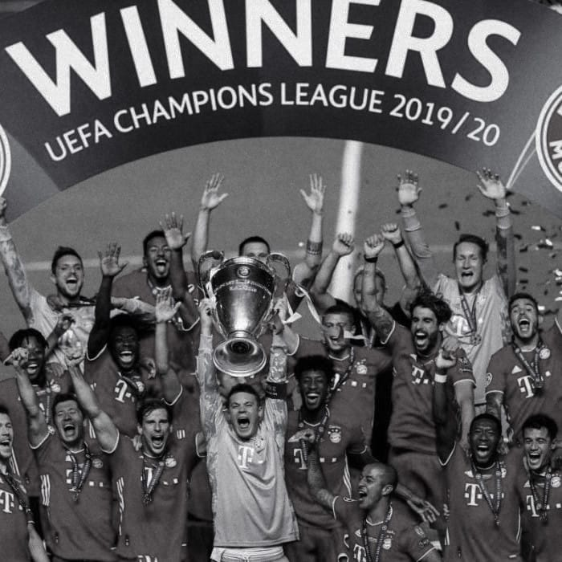
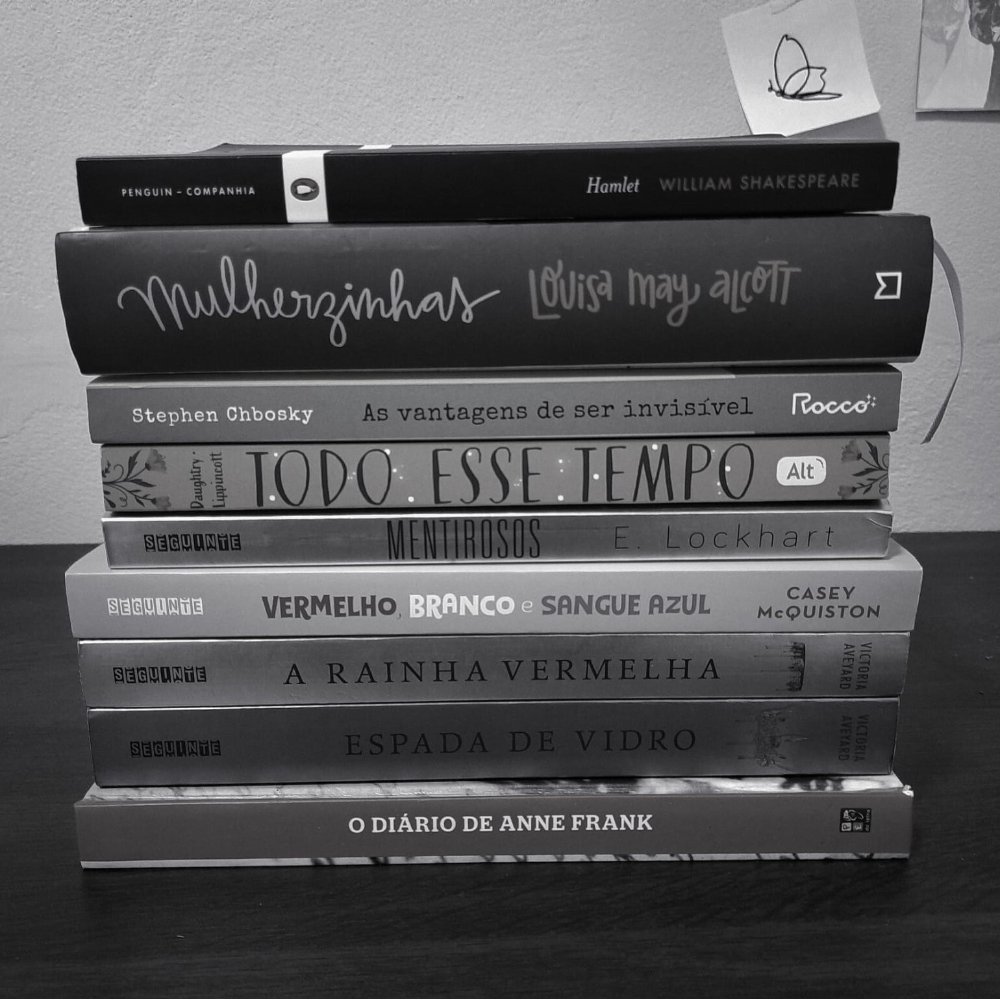
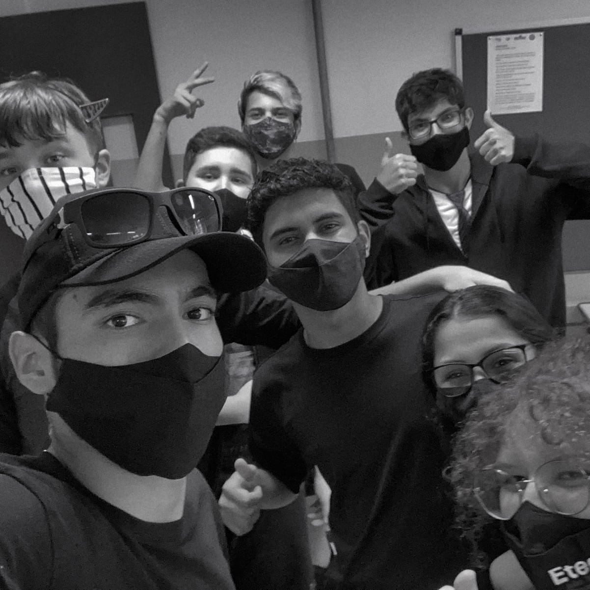

-
Sobre mim
Times que torço, coisas que gosto de fazer e assistir.
-
Livros
Alguns dos meus livros favoritos deste ano.
-
Galeria 1°C
Algumas das milhões de fotos que tiramos nas aulas.
Julia sempre gostou muito de esportes mesmo não tendo tanta habilidade para praticá-los, ama ler e surta facilmente com seus livros. Se estressa muito fácil na maioria das vezes mas tenta sempre se manter no controle. Obcecada (até demais) por Fórmula 1, vôlei e futebol, se anima muito falando sobre essas coisas e ás vezes (quase sempre), não sabe quando parar de falar sobre o assunto.
É muito tímida mas assim que faz amizade com a pessoa já começa a falar como se não ouvesse amanhã.